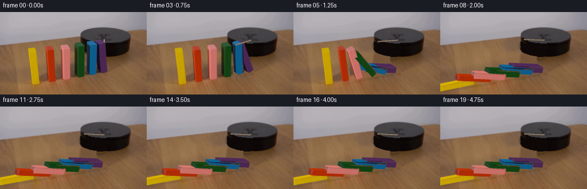
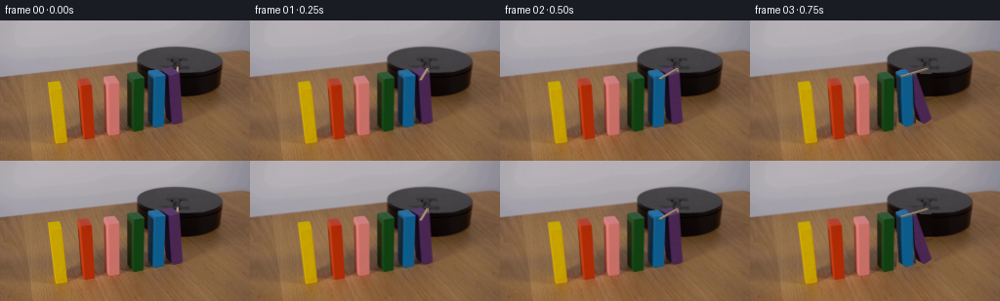
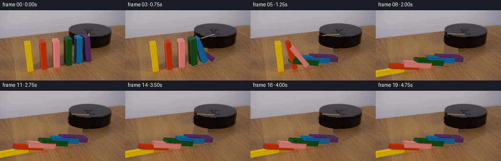

CODING AGENTS AS PIXEL WORLD MODELS
traex/GPT-6.1-Sol · 0034
点击播放 · 原生 RGB 像素
逐轮保存的候选
回放视频、检查图与代码变化。
每份候选均可单独播放。实际图片检查记录在下方工具轨迹中。
候选 01播放与检查图
点击播放 · 原生 RGB 像素

展开代码变化
--- 上一保存版本
+++ 本次保存版本
@@ -0,0 +1,272 @@
+from pathlib import Path
+import numpy as np
+import cv2
+from PIL import Image
+import artifact_io
+
+ROOT=Path(__file__).resolve().parent
+IM=np.array(Image.open(ROOT/'first_frame.png').convert('RGB'))
+H,W=IM.shape[:2]
+S=3
+# Measured top and lower corners of the painted wooden tiles. The four
+# corners follow the row direction and then the across-row direction.
+TOP=np.array([
+ [[49,63],[58,61],[62,64],[53,66]],
+ [[79,61],[87.5,58.5],[92.5,62],[84,64.5]],
+ [[106,59],[115.5,56.5],[122,61.5],[112.5,64]],
+ [[129,55],[139,52],[147.5,57.5],[137.5,60.5]],
+ [[151,52],[160,49.5],[169.5,55],[160.5,58]],
+ [[165.5,51],[174,47.5],[183.5,53],[175,56.5]]],float)
+BOT=np.array([
+ [[56,123],[65,121],[69,124],[60,127]],
+ [[84.5,119],[93,116.5],[97,120],[89,123]],
+ [[107.5,115],[117,112.5],[123,116.5],[113,119]],
+ [[129.5,109],[139.5,106],[148,111.5],[138,114.5]],
+ [[152.5,104],[161.5,101.5],[170,106.5],[160,110]],
+ [[168.5,100.5],[177,97],[187,103],[178.5,107]]],float)
+COLORS=np.array([[200,163,1],[174,44,6],[201,112,103],[18,65,19],[13,92,139],[74,39,81]],float)
+
+# Remove only the photographed objects and their original contact shadows;
+# all other pixels of the locked-off shot are retained.
+objm=[]
+for k in range(6):
+ pts=np.r_[TOP[k],BOT[k]].astype(np.float32)
+ hull=cv2.convexHull(pts).reshape(-1,2)
+ m=np.zeros((H,W),np.uint8)
+ cv2.fillConvexPoly(m,np.rint(hull).astype(np.int32),255)
+ m=cv2.dilate(m,np.ones((3,3),np.uint8))
+ objm.append(m)
+mask=np.maximum.reduce(objm)
+shadow=np.zeros((H,W),np.uint8)
+# Shadows are soft, extending slightly toward the lower-left of each foot.
+for k in range(6):
+ b=BOT[k].mean(0)
+ cv2.ellipse(shadow,(int(b[0]-9),int(b[1]+1)),(16,5),-8,0,360,255,-1)
+# dark illumination between the closely spaced blocks
+cv2.fillPoly(shadow,[np.array([[72,109],[107,87],[131,82],[157,101],[164,112],[119,118]],np.int32)],255)
+mask=np.maximum(mask,shadow)
+# Small photographed end of the arm, not part of a tile.
+mask[47:54,179:184]=255
+BG=cv2.inpaint(IM,mask,4,cv2.INPAINT_TELEA)
+Y,X=np.mgrid[:H,:W]
+rng=np.random.default_rng(26)
+noise=rng.normal(0,.65,(H,W))
+# Restore the hidden section of the cylindrical black mounting platform.
+q=(X-183.0)/43.3
+inside=np.abs(q)<1
+span=13.7*np.sqrt(np.maximum(0,1-q*q))
+topdisk=inside & (((Y-40.6)/13.7)**2+q*q<1)
+cylinder=inside & (Y>=40.6+span) & (Y<=64.1+span)
+# At the back the top ellipse defines its outline.
+platform=topdisk|cylinder
+plate=np.stack([68.4-.22*(Y-40)+noise,66.2-.22*(Y-40)+noise,69.4-.22*(Y-40)+noise],-1)
+side=np.stack([14.2+noise,8.7+noise,7.6+noise],-1)
+repair=(mask>0)&platform
+BG[repair & topdisk]=np.clip(plate[repair & topdisk],0,255).astype(np.uint8)
+BG[repair & cylinder]=np.clip(side[repair & cylinder],0,255).astype(np.uint8)
+# Prevent paint from bleeding into the revealed table. Replace only outliers
+# with row-local wood texture, with the original lighting left intact.
+for yy in range(48,131):
+ for xx in np.where((mask[yy]>0)&(~platform[yy]))[0]:
+ color=BG[yy,xx].astype(float)
+ if color[0]<65 or color[1]>color[0]*1.01 or color[2]>color[1]*1.0:
+ left=max(0,xx-22);right=min(W-1,xx+22)
+ good=np.where((mask[yy]==0)&(~platform[yy])&(X[yy]>left)&(X[yy]<right)&(IM[yy,:,0]>85)&(IM[yy,:,0]>IM[yy,:,1]*1.16)&(IM[yy,:,1]>IM[yy,:,2]*1.1))[0]
+ if len(good):
+ near=good[np.argsort(abs(good-xx))[:5]]
+ BG[yy,xx]=np.mean(IM[yy,near],axis=0).astype(np.uint8)
+Image.fromarray(BG).save(ROOT/'.tmp/background.png')
+
+# Textures are obtained solely from the source frame. Affine/projective
+# face maps preserve its paint, grain, edge wear and lighting variation.
+def face_texture(quad,k,kind):
+ n=96
+ dst=np.array([[0,0],[n-1,0],[n-1,n-1],[0,n-1]],np.float32)
+ M=cv2.getPerspectiveTransform(np.asarray(quad,np.float32),dst)
+ tex=cv2.warpPerspective(IM,M,(n,n),flags=cv2.INTER_LINEAR,borderMode=cv2.BORDER_REPLICATE)
+ if kind=='new':
+ # Previously hidden rear face, same paint with weak longitudinal grain.
+ yy,xx=np.mgrid[:n,:n]
+ src=tex.astype(float)
+ lumin=np.mean(src,2)
+ variation=cv2.GaussianBlur(lumin,(0,0),1.5)
+ variation=np.clip((variation-np.median(variation))*.2,-5,5)
+ tex=np.clip(COLORS[k][None,None,:]*1.09+variation[:,:,None]+rng.normal(0,.45,(n,n,1)),0,255).astype(np.uint8)
+ return tex
+TEXT=[]
+for k in range(6):
+ t,b=TOP[k],BOT[k]
+ TEXT.append({
+ 'front':face_texture([t[3],t[2],b[2],b[3]],k,'front'),
+ 'left':face_texture([t[0],t[3],b[3],b[0]],k,'left'),
+ 'top':face_texture([t[0],t[1],t[2],t[3]],k,'top'),
+ 'right':face_texture([t[1],t[2],b[2],b[1]],k,'new')})
+
+# Projection uses each source tile's measured basis. Rotation keeps the
+# low forward edge on the table and makes the tall axis sweep down the row.
+def geometry(k,theta):
+ b=BOT[k];t=TOP[k]
+ base=b[0].copy()
+ U=((b[1]-b[0])+(b[2]-b[3]))*.5
+ D=((b[3]-b[0])+(b[2]-b[1]))*.5
+ Z=(t-b).mean(0)
+ height=np.linalg.norm(Z)
+ thick=np.linalg.norm(U)
+ row=np.array([1.015,-.188])
+ c,s=np.cos(theta),np.sin(theta)
+ U2=U*c+Z*(thick/height)*s
+ Z2=Z*c-row*height*s
+ # bottom left, bottom right, front right, front left; then top corners
+ p=np.array([base,base+U2,base+U2+D,base+D])
+ p=np.r_[p,p+Z2]
+ # Depth for analytic surface visibility and occlusion (no rendering engine).
+ u=np.array([0,thick,thick,0,0,thick,thick,0])
+ d=np.array([0,0,10,10,0,0,10,10])
+ z=np.array([0,0,0,0,height,height,height,height])
+ ur=u*c-z*s
+ zr=u*s+z*c
+ depths=-.22*(k*26+ur)+.82*d+.42*zr
+ # Perspective calibration correction vanishes continuously as it falls.
+ if theta<.2:
+ orig=np.r_[b,t]
+ nominal=np.r_[np.array([b[0],b[0]+U,b[0]+U+D,b[0]+D]),np.array([b[0],b[0]+U,b[0]+U+D,b[0]+D])+Z]
+ p+=(orig-nominal)*max(0,1-theta/.2)
+ return p,depths
+
+FACES=[('front',[7,6,2,3]),('left',[4,7,3,0]),('top',[4,5,6,7]),('right',[5,6,2,1])]
+
+def triangle_draw(canvas,zbuf,positions,depths,uv,tex,scale):
+ xy=positions*S
+ xmin=max(0,int(np.floor(xy[:,0].min())));xmax=min(W*S-1,int(np.ceil(xy[:,0].max())))
+ ymin=max(0,int(np.floor(xy[:,1].min())));ymax=min(H*S-1,int(np.ceil(xy[:,1].max())))
+ if xmax<xmin or ymax<ymin:return
+ a,b,c=xy
+ den=(b[1]-c[1])*(a[0]-c[0])+(c[0]-b[0])*(a[1]-c[1])
+ if abs(den)<.001:return
+ y,x=np.mgrid[ymin:ymax+1,xmin:xmax+1];x=x+.5;y=y+.5
+ l0=((b[1]-c[1])*(x-c[0])+(c[0]-b[0])*(y-c[1]))/den
+ l1=((c[1]-a[1])*(x-c[0])+(a[0]-c[0])*(y-c[1]))/den
+ l2=1-l0-l1
+ depth=l0*depths[0]+l1*depths[1]+l2*depths[2]
+ hit=(l0>=-1e-5)&(l1>=-1e-5)&(l2>=-1e-5)&(depth>zbuf[ymin:ymax+1,xmin:xmax+1])
+ if not hit.any():return
+ u=l0*uv[0,0]+l1*uv[1,0]+l2*uv[2,0]
+ v=l0*uv[0,1]+l1*uv[1,1]+l2*uv[2,1]
+ rgb=cv2.remap(tex,u.astype(np.float32),v.astype(np.float32),cv2.INTER_LINEAR,borderMode=cv2.BORDER_REPLICATE)
+ part=canvas[ymin:ymax+1,xmin:xmax+1]
+ part[hit]=np.clip(rgb[hit].astype(float)*scale,0,255)
+ zbuf[ymin:ymax+1,xmin:xmax+1][hit]=depth[hit]
+
+def draw_tile(canvas,zbuf,k,theta):
+ p,depth=geometry(k,theta)
+ c,s=np.cos(theta),np.sin(theta)
+ visible={'front':True,'left':.22*c-.42*s>0,'right':-.22*c+.42*s>0,'top':.22*s+.42*c>0}
+ for name,idx in FACES:
+ if not visible[name]:continue
+ tex=TEXT[k][name]
+ shade={'front':1.0,'left':1.0,'top':max(.70,1-.22*s),'right':.84+.16*s}[name]
+ uv=np.array([[0,0],[95,0],[95,95],[0,95]],float)
+ for tri in [[0,1,2],[0,2,3]]:
+ q=np.array(idx)[tri]
+ triangle_draw(canvas,zbuf,p[q],depth[q],uv[tri],tex,shade)
+
+START=.50
+DELAY=.165
+DURATION=.62
+
+def angle(k,t):
+ elapsed=t-(START+(5-k)*DELAY)
+ if elapsed<=0:return 0.
+ final=np.deg2rad(90 if k==0 else 77)
+ f=np.clip(elapsed/DURATION,0,1)
+ # Gravity accelerates the early tip; the contact at the end dissipates it.
+ a=final*(.11*f+.89*f*f)
+ if elapsed>DURATION:
+ d=elapsed-DURATION
+ a=final+np.deg2rad(2.4)*np.exp(-d*12)*np.sin(d*22)
+ return a
+
+def arm_angle(t):
+ # Clockwise rotation in the table plane: front -> left -> rear.
+ if t<.1:return np.pi/2
+ f=np.clip((t-.1)/1.55,0,1)
+ return np.pi/2+np.deg2rad(97)*(1-(1-f)**1.30)
+
+# A slim rectangular wooden arm just behind the tile tops, with a fixed
+# concealed pivot on the front of the mounting disk.
+def draw_arm(canvas,zbuf,t):
+ theta=arm_angle(t)
+ center=np.array([181.8,49.0])
+ length=36
+ direct=np.array([np.cos(theta),.35*np.sin(theta)])
+ side=np.array([-np.sin(theta),.35*np.cos(theta)])*1.25
+ p=np.array([center-side,center+direct*length-side,center+direct*length+side,center+side])
+ # source-colored wood, highlighted on its upper flat side
+ n=96;yy,xx=np.mgrid[:n,:n]
+ grain=1.3*np.sin(xx*.31+yy*.06)+.7*np.sin(xx*.8)+rng.normal(0,.35,(n,n))
+ tex=np.clip(np.array([166,141,116])[None,None,:]+grain[:,:,None],0,255).astype(np.uint8)
+ uv=np.array([[0,0],[95,0],[95,95],[0,95]],float)
+ # Slight edge thickness underneath the bar.
+ pp=p+np.array([0,1.25])
+ edge=np.array([p[0],p[1],pp[1],pp[0]])
+ for q in ([0,1,2],[0,2,3]):
+ triangle_draw(canvas,zbuf,edge[q],np.full(3,12.),uv[q],tex,.66)
+ for q in ([0,1,2],[0,2,3]):
+ triangle_draw(canvas,zbuf,p[q],np.full(3,12.15),uv[q],tex,1)
+
+
+def frame(t):
+ angles=[angle(k,t) for k in range(6)]
+ active=[a>.0001 for a in angles]
+ # Restore the original photographed stationary tiles and their shadows;
+ # reveal clean background locally only when an object actually moves.
+ effective=np.zeros((H,W),np.float32)
+ for k,a in enumerate(angles):
+ if a>0:
+ mm=objm[k].astype(float)/255
+ b=BOT[k].mean(0)
+ sm=np.zeros((H,W),np.uint8)
+ cv2.ellipse(sm,(int(b[0]-9),int(b[1]+1)),(17,6),-8,0,360,255,-1)
+ sm=cv2.GaussianBlur(sm,(5,5),0).astype(float)/255
+ effective=np.maximum(effective,np.maximum(mm,sm))
+ if all(active):effective=np.maximum(effective,mask.astype(float)/255)
+ # The tiny end of the old arm is removed from the moment rotation starts.
+ effective[47:54,179:184]=1
+ base=IM.astype(float)*(1-effective[:,:,None])+BG.astype(float)*effective[:,:,None]
+ # Retain standing silhouettes exactly, even where they overlap a moving
+ # neighbor's old shadow region.
+ for k in range(6):
+ if not active[k]:
+ m=objm[k].astype(float)/255
+ base=base*(1-m[:,:,None])+IM*m[:,:,None]
+ canvas=cv2.resize(base.astype(np.float32),(W*S,H*S),interpolation=cv2.INTER_CUBIC)
+ zbuf=np.full((H*S,W*S),-1e4,np.float32)
+ # Contact and cast shadows follow the falling body's footprint.
+ sh=np.zeros((H*S,W*S),np.float32)
+ for k,a in enumerate(angles):
+ if not active[k]:continue
+ p,_=geometry(k,a)
+ h=np.linalg.norm((TOP[k]-BOT[k]).mean(0))
+ length=h*np.sin(a)
+ b=BOT[k][3]
+ footprint=np.array([b,b+[10,-3],b+[10-length,-3+.188*length],b+[-length,.188*length]])
+ footprint+=np.array([-3,2.4])
+ cv2.fillConvexPoly(sh,np.rint(footprint*S).astype(np.int32),.19)
+ sh=cv2.GaussianBlur(sh,(0,0),1.5*S)
+ canvas*=1-sh[:,:,None]
+ # Use standing source pixels but reserve their measured 3D depth so the
+ # rotating stick remains behind them until they topple.
+ for k in range(6):
+ if not active[k]:
+ m=cv2.resize(objm[k],(W*S,H*S),interpolation=cv2.INTER_NEAREST)>0
+ p,dep=geometry(k,0)
+ zbuf[m]=np.mean(dep)
+ draw_arm(canvas,zbuf,t)
+ for k in range(6):
+ if active[k]:draw_tile(canvas,zbuf,k,angles[k])
+ return np.clip(cv2.resize(canvas,(W,H),interpolation=cv2.INTER_AREA),0,255).astype(np.uint8)
+
+frames=[IM.copy()]
+for j in range(1,20):frames.append(frame(j/4))
+frames=np.stack(frames)
+artifact_io.save(frames,ROOT)
候选 02播放与检查图
点击播放 · 原生 RGB 像素


展开代码变化
--- 上一保存版本
+++ 本次保存版本
@@ -84,6 +84,20 @@
dst=np.array([[0,0],[n-1,0],[n-1,n-1],[0,n-1]],np.float32)
M=cv2.getPerspectiveTransform(np.asarray(quad,np.float32),dst)
tex=cv2.warpPerspective(IM,M,(n,n),flags=cv2.INTER_LINEAR,borderMode=cv2.BORDER_REPLICATE)
+ # Background or adjacent faces at a sub-pixel border should not become
+ # a stripe when that face rotates toward the camera.
+ yy,xx=np.mgrid[:n,:n]
+ rgb=tex.astype(float)
+ center=rgb[8:-8,8:-8].reshape(-1,3)
+ med=np.median(center,axis=0)
+ # Paint chromaticity, robust to the darker side of the wooden block.
+ chrom=rgb/(np.sum(rgb,axis=2,keepdims=True)+1)
+ target=med/(med.sum()+1)
+ bad=np.max(abs(chrom-target),axis=2)>.105
+ bad|=(np.sum(rgb,axis=2)<med.sum()*.52)
+ if bad.any():
+ rgb[bad]=med+rng.normal(0,.8,(int(bad.sum()),1))
+ tex=np.clip(rgb,0,255).astype(np.uint8)
if kind=='new':
# Previously hidden rear face, same paint with weak longitudinal grain.
yy,xx=np.mgrid[:n,:n]
@@ -170,9 +184,9 @@
q=np.array(idx)[tri]
triangle_draw(canvas,zbuf,p[q],depth[q],uv[tri],tex,shade)
-START=.50
-DELAY=.165
-DURATION=.62
+START=.30
+DELAY=.19
+DURATION=.58
def angle(k,t):
elapsed=t-(START+(5-k)*DELAY)
@@ -210,9 +224,9 @@
pp=p+np.array([0,1.25])
edge=np.array([p[0],p[1],pp[1],pp[0]])
for q in ([0,1,2],[0,2,3]):
- triangle_draw(canvas,zbuf,edge[q],np.full(3,12.),uv[q],tex,.66)
+ triangle_draw(canvas,zbuf,edge[q],np.full(3,-7.),uv[q],tex,.66)
for q in ([0,1,2],[0,2,3]):
- triangle_draw(canvas,zbuf,p[q],np.full(3,12.15),uv[q],tex,1)
+ triangle_draw(canvas,zbuf,p[q],np.full(3,-6.85),uv[q],tex,1)
def frame(t):
@@ -254,17 +268,33 @@
cv2.fillConvexPoly(sh,np.rint(footprint*S).astype(np.int32),.19)
sh=cv2.GaussianBlur(sh,(0,0),1.5*S)
canvas*=1-sh[:,:,None]
- # Use standing source pixels but reserve their measured 3D depth so the
- # rotating stick remains behind them until they topple.
+ # Standing faces reserve their exact projected depths, while retaining
+ # the original image colors rather than re-rendering their silhouettes.
+ before=canvas.copy()
for k in range(6):
- if not active[k]:
- m=cv2.resize(objm[k],(W*S,H*S),interpolation=cv2.INTER_NEAREST)>0
- p,dep=geometry(k,0)
- zbuf[m]=np.mean(dep)
+ if not active[k]:draw_tile(canvas,zbuf,k,0)
+ canvas=before
draw_arm(canvas,zbuf,t)
for k in range(6):
if active[k]:draw_tile(canvas,zbuf,k,angles[k])
- return np.clip(cv2.resize(canvas,(W,H),interpolation=cv2.INTER_AREA),0,255).astype(np.uint8)
+ # Only moving silhouettes, removed silhouettes and their shadows may
+ # change. Outside that support use the source pixels without resampling.
+ support=effective.copy()
+ for k,a in enumerate(angles):
+ if a>0:
+ p,_=geometry(k,a)
+ cv2.fillConvexPoly(support,cv2.convexHull(p.astype(np.float32)).astype(np.int32),1)
+ th=arm_angle(t)
+ cen=np.array([181.8,49.0]);dr=np.array([np.cos(th),.35*np.sin(th)])
+ side=np.array([-np.sin(th),.35*np.cos(th)])*1.25
+ pol=np.array([cen-side,cen+dr*36-side,cen+dr*36+side+[0,1.25],cen+side+[0,1.25]])
+ cv2.fillConvexPoly(support,np.rint(pol).astype(np.int32),1)
+ support=np.maximum(support,cv2.resize(sh,(W,H),interpolation=cv2.INTER_AREA)>.0002)
+ support=cv2.dilate((support>.002).astype(np.uint8),np.ones((3,3),np.uint8))>0
+ out=np.clip(cv2.resize(canvas,(W,H),interpolation=cv2.INTER_AREA),0,255).astype(np.uint8)
+ out[~support]=IM[~support]
+ return out
+
frames=[IM.copy()]
for j in range(1,20):frames.append(frame(j/4))
候选 03播放与检查图
候选 04播放与检查图
点击播放 · 原生 RGB 像素

展开代码变化
--- 上一保存版本 +++ 本次保存版本 @@ -97,6 +97,12 @@ bad|=(np.sum(rgb,axis=2)<med.sum()*.52) if bad.any(): rgb[bad]=med+rng.normal(0,.8,(int(bad.sum()),1)) + if kind=='top': + topcolors=np.array([[209,174,15],[179,65,49],[207,129,127],[51,88,50],[39,111,159],[87,60,104]],float) + # Retain fine wood texture without allowing the adjacent table edge to + # stretch into a large face when the block tips down. + detail=np.clip(np.mean(rgb,2)-np.median(np.mean(rgb,2)),-8,8) + rgb=topcolors[k][None,None,:]+detail[:,:,None]*.5 tex=np.clip(rgb,0,255).astype(np.uint8) if kind=='new': # Previously hidden rear face, same paint with weak longitudinal grain. @@ -217,7 +223,7 @@ p=np.array([center-side,center+direct*length-side,center+direct*length+side,center+side]) # source-colored wood, highlighted on its upper flat side n=96;yy,xx=np.mgrid[:n,:n] - grain=1.3*np.sin(xx*.31+yy*.06)+.7*np.sin(xx*.8)+rng.normal(0,.35,(n,n)) + grain=1.3*np.sin(xx*.31+yy*.06)+.7*np.sin(xx*.8)+.25*np.sin(xx*2.31+yy*1.78) tex=np.clip(np.array([166,141,116])[None,None,:]+grain[:,:,None],0,255).astype(np.uint8) uv=np.array([[0,0],[95,0],[95,95],[0,95]],float) # Slight edge thickness underneath the bar.
可观测工具轨迹
实际执行的命令与返回图片。
命令 1exit 0
/bin/bash -lc "ls -la && cat prompt.txt && printf '\\n--- RULES ---\\n' && cat GENERATION_RULES.md"
命令 2exit 0
/bin/bash -lc "cat artifact_io.py && python - <<'PY'
from PIL import Image
import numpy as np
im=np.asarray(Image.open('first_frame.png')); print('shape',im.shape)
# coarse RGB map named colors / dark
for y in range(0,144,3):
s=''
for x in range(0,256,3):
r,g,b=im[y:y+3,x:x+3].mean((0,1))
if max(r,g,b)<50:c='#'
elif max(r,g,b)<95:c='x'
elif r>g*1.3 and r>b*1.3:c='R'
elif g>r*1.15 and g>b*1.1:c='G'
elif b>r*1.2 and b>g*1.05:c='B'
elif r>b*1.5 and g>b*1.3:c='y'
elif max(r,g,b)-min(r,g,b)<25:c='.' if r>165 else ':'
else:c='o'
s+=c
print(s)
PY"命令 3exit 0
/bin/bash -lc "python - <<'PY'
import numpy as np
from PIL import Image
im=np.array(Image.open('first_frame.png'))
# print color RGB at row samples
for y in [30,40,45,50,55,60,70,80,90,100,110,120,130]:
print('\\ny',y)
print(' '.join(f'{x}:{tuple(im[y,x])}' for x in range(40,200,5)))
print('\\nMap area x35:210 y25:136 -- T wood table, W wall, K black, b blue, Y beige wood')
for y in range(25,136,2):
s=''
for x in range(35,211,2):
r,g,b=im[y:y+2,x:x+2].mean((0,1))
if r>g*1.35 and r>b*1.7 and r>85:c='T'
elif r>135 and g>85 and g/b>1.4 and r/g<1.6:c='Y'
elif b>r*1.25 and b>g*1.05:c='b'
elif r<90 and g<90 and b<90:c='#' if r<35 else 'k'
elif r>150 and g>145 and b>135:c='.'
else:c='o'
s+=c
print(f'{y:3d} {s}')
PY"命令 4exit 0
/bin/bash -lc "python - <<'PY'
import numpy as np
from PIL import Image
A=np.asarray(Image.open('first_frame.png')).astype(float)
for y in range(24,62):
s=''
for x in range(130,243):
r,g,b=A[y,x]
if r>g*1.25 and g>b*1.2 and r>75:c='w'
elif r>g*1.15 and r>b*1.4:c='t'
elif b>r*1.2 and g>r*1.3:c='B'
elif b>g*1.15 and r>g*1.25:c='P'
elif g>r*1.2 and g>b*1.3:c='G'
elif max(r,g,b)<30:c='#'
elif max(r,g,b)<50:c='X'
elif max(r,g,b)<85:c='k'
elif max(r,g,b)<130:c='o'
else:c='.'
s+=c
print(f'{y:2d} {s}')
print('pixels wood candidates on platform')
for y in range(35,54):
xs=[x for x in range(145,221) if A[y,x,0]>A[y,x,1]*1.15 and A[y,x,1]>A[y,x,2]*1.1 and A[y,x,0]>70]
print(y,xs)
PY"命令 5exit 0
/bin/bash -lc "python - <<'PY'
from PIL import Image
import numpy as np
A=np.array(Image.open('first_frame.png')).astype(float)
for y in range(40,94,2):
print(y,' '.join(f'{x}:{tuple(A[y,x].astype(int))}' for x in range(174,210,2)))
# find components of beige above table excluding table (x170-210 y35-100)
PY"命令 6exit 0
/bin/bash -lc "python - <<'PY'
import numpy as np
from PIL import Image
A=np.asarray(Image.open('first_frame.png')).astype(float)
# full pixel classify blocks use color separating wood
for y in range(46,130):
s=''
for x in range(42,193):
r,g,b=A[y,x]
if r>175 and g>135 and b<35: c='Y'
elif r>155 and g<80 and b<40:c='R'
elif r>170 and g>85 and b>75 and r/g>1.5:c='S'
elif g>r*1.12 and g>b*1.2 and g>40:c='G'
elif b>r*1.6 and b>g*1.15 and b>45:c='B'
elif b>g*1.35 and r>g*1.2 and b>40 and r<120:c='P'
elif max(r,g,b)<40:c='#'
elif max(r,g,b)<90:c='k'
else:c=' '
s+=c
print(f'{y:3d} {s}')
PY"命令 7exit 0
/bin/bash -lc "python - <<'PY'
from PIL import Image
import numpy as np
from scipy.spatial import ConvexHull
A=np.array(Image.open('first_frame.png')).astype(float)
y,x=np.mgrid[:144,:256];r,g,b=A.transpose(2,0,1)
for name,mask in [('yellow',(r>170)&(g>120)&(b<40)&(x>40)&(x<75)),('red',(r>150)&(r>g*1.8)&(g<90)&(b<65)&(x>75)&(x<101)),('pink',(r>170)&(r>g*1.4)&(g>85)&(b>75)&(x>103)&(x<126)),('green',(g>r*1.1)&(g>b*1.25)&(x>126)&(x<150)),('blue',(b>r*1.6)&(g>r*1.2)&(b>g*1.12)&(x>150)&(x<172)),('purple',(b>g*1.3)&(r>g*1.2)&(x>165)&(x<188)&(y>45)&(y<109))]:
pts=np.array([x[mask],y[mask]]).T
hull=pts[ConvexHull(pts).vertices]
print(name,'hull',hull.tolist())
for yy in range(45,128,3):
xx=x[mask&(y==yy)]
if len(xx):print(yy,int(min(xx)),int(max(xx)),end='; ')
print()
PY"命令 8exit 0
/bin/bash -lc "python - <<'PY' import importlib.util for m in ['cv2','scipy','numpy','PIL']: print(m, bool(importlib.util.find_spec(m))) PY"
命令 9exit 0
/bin/bash -lc "cat > generate.py <<'PY'
from pathlib import Path
import numpy as np
import cv2
from PIL import Image
import artifact_io
ROOT=Path(__file__).resolve().parent
IM=np.array(Image.open(ROOT/'first_frame.png').convert('RGB'))
H,W=IM.shape[:2]
S=3
# Measured top and lower corners of the painted wooden tiles. The four
# corners follow the row direction and then the across-row direction.
TOP=np.array([
[[49,63],[58,61],[62,64],[53,66]],
[[79,61],[87.5,58.5],[92.5,62],[84,64.5]],
[[106,59],[115.5,56.5],[122,61.5],[112.5,64]],
[[129,55],[139,52],[147.5,57.5],[137.5,60.5]],
[[151,52],[160,49.5],[169.5,55],[160.5,58]],
[[165.5,51],[174,47.5],[183.5,53],[175,56.5]]],float)
BOT=np.array([
[[56,123],[65,121],[69,124],[60,127]],
[[84.5,119],[93,116.5],[97,120],[89,123]],
[[107.5,115],[117,112.5],[123,116.5],[113,119]],
[[129.5,109],[139.5,106],[148,111.5],[138,114.5]],
[[152.5,104],[161.5,101.5],[170,106.5],[160,110]],
[[168.5,100.5],[177,97],[187,103],[178.5,107]]],float)
COLORS=np.array([[200,163,1],[174,44,6],[201,112,103],[18,65,19],[13,92,139],[74,39,81]],float)
# Remove only the photographed objects and their original contact shadows;
# all other pixels of the locked-off shot are retained.
objm=[]
for k in range(6):
pts=np.r_[TOP[k],BOT[k]].astype(np.float32)
hull=cv2.convexHull(pts).reshape(-1,2)
m=np.zeros((H,W),np.uint8)
cv2.fillConvexPoly(m,np.rint(hull).astype(np.int32),255)
m=cv2.dilate(m,np.ones((3,3),np.uint8))
objm.append(m)
mask=np.maximum.reduce(objm)
shadow=np.zeros((H,W),np.uint8)
# Shadows are soft, extending slightly toward the lower-left of each foot.
for k in range(6):
b=BOT[k].mean(0)
cv2.ellipse(shadow,(int(b[0]-9),int(b[1]+1)),(16,5),-8,0,360,255,-1)
# dark illumination between the closely spaced blocks
cv2.fillPoly(shadow,[np.array([[72,109],[107,87],[131,82],[157,101],[164,112],[119,118]],np.int32)],255)
mask=np.maximum(mask,shadow)
# Small photographed end of the arm, not part of a tile.
mask[47:54,179:184]=255
BG=cv2.inpaint(IM,mask,4,cv2.INPAINT_TELEA)
Y,X=np.mgrid[:H,:W]
rng=np.random.default_rng(26)
noise=rng.normal(0,.65,(H,W))
# Restore the hidden section of the cylindrical black mounting platform.
q=(X-183.0)/43.3
inside=np.abs(q)<1
span=13.7*np.sqrt(np.maximum(0,1-q*q))
topdisk=inside & (((Y-40.6)/13.7)**2+q*q<1)
cylinder=inside & (Y>=40.6+span) & (Y<=64.1+span)
# At the back the top ellipse defines its outline.
platform=topdisk|cylinder
plate=np.stack([68.4-.22*(Y-40)+noise,66.2-.22*(Y-40)+noise,69.4-.22*(Y-40)+noise],-1)
side=np.stack([14.2+noise,8.7+noise,7.6+noise],-1)
repair=(mask>0)&platform
BG[repair & topdisk]=np.clip(plate[repair & topdisk],0,255).astype(np.uint8)
BG[repair & cylinder]=np.clip(side[repair & cylinder],0,255).astype(np.uint8)
# Prevent paint from bleeding into the revealed table. Replace only outliers
# with row-local wood texture, with the original lighting left intact.
for yy in range(48,131):
for xx in np.where((mask[yy]>0)&(~platform[yy]))[0]:
color=BG[yy,xx].astype(float)
if color[0]<65 or color[1]>color[0]*1.01 or color[2]>color[1]*1.0:
left=max(0,xx-22);right=min(W-1,xx+22)
good=np.where((mask[yy]==0)&(~platform[yy])&(X[yy]>left)&(X[yy]<right)&(IM[yy,:,0]>85)&(IM[yy,:,0]>IM[yy,:,1]*1.16)&(IM[yy,:,1]>IM[yy,:,2]*1.1))[0]
if len(good):
near=good[np.argsort(abs(good-xx))[:5]]
BG[yy,xx]=np.mean(IM[yy,near],axis=0).astype(np.uint8)
Image.fromarray(BG).save(ROOT/'.tmp/background.png')
# Textures are obtained solely from the source frame. Affine/projective
# face maps preserve its paint, grain, edge wear and lighting variation.
def face_texture(quad,k,kind):
n=96
dst=np.array([[0,0],[n-1,0],[n-1,n-1],[0,n-1]],np.float32)
M=cv2.getPerspectiveTransform(np.asarray(quad,np.float32),dst)
tex=cv2.warpPerspective(IM,M,(n,n),flags=cv2.INTER_LINEAR,borderMode=cv2.BORDER_REPLICATE)
if kind=='new':
# Previously hidden rear face, same paint with weak longitudinal grain.
yy,xx=np.mgrid[:n,:n]
src=tex.astype(float)
lumin=np.mean(src,2)
variation=cv2.GaussianBlur(lumin,(0,0),1.5)
variation=np.clip((variation-np.median(variation))*.2,-5,5)
tex=np.clip(COLORS[k][None,None,:]*1.09+variation[:,:,None]+rng.normal(0,.45,(n,n,1)),0,255).astype(np.uint8)
return tex
TEXT=[]
for k in range(6):
t,b=TOP[k],BOT[k]
TEXT.append({
'front':face_texture([t[3],t[2],b[2],b[3]],k,'front'),
'left':face_texture([t[0],t[3],b[3],b[0]],k,'left'),
'top':face_texture([t[0],t[1],t[2],t[3]],k,'top'),
'right':face_texture([t[1],t[2],b[2],b[1]],k,'new')})
# Projection uses each source tile's measured basis. Rotation keeps the
# low forward edge on the table and makes the tall axis sweep down the row.
def geometry(k,theta):
b=BOT[k];t=TOP[k]
base=b[0].copy()
U=((b[1]-b[0])+(b[2]-b[3]))*.5
D=((b[3]-b[0])+(b[2]-b[1]))*.5
Z=(t-b).mean(0)
height=np.linalg.norm(Z)
thick=np.linalg.norm(U)
row=np.array([1.015,-.188])
c,s=np.cos(theta),np.sin(theta)
U2=U*c+Z*(thick/height)*s
Z2=Z*c-row*height*s
# bottom left, bottom right, front right, front left; then top corners
p=np.array([base,base+U2,base+U2+D,base+D])
p=np.r_[p,p+Z2]
# Depth for analytic surface visibility and occlusion (no rendering engine).
u=np.array([0,thick,thick,0,0,thick,thick,0])
d=np.array([0,0,10,10,0,0,10,10])
z=np.array([0,0,0,0,height,height,height,height])
ur=u*c-z*s
zr=u*s+z*c
depths=-.22*(k*26+ur)+.82*d+.42*zr
# Perspective calibration correction vanishes continuously as it falls.
if theta<.2:
orig=np.r_[b,t]
nominal=np.r_[np.array([b[0],b[0]+U,b[0]+U+D,b[0]+D]),np.array([b[0],b[0]+U,b[0]+U+D,b[0]+D])+Z]
p+=(orig-nominal)*max(0,1-theta/.2)
return p,depths
FACES=[('front',[7,6,2,3]),('left',[4,7,3,0]),('top',[4,5,6,7]),('right',[5,6,2,1])]
def triangle_draw(canvas,zbuf,positions,depths,uv,tex,scale):
xy=positions*S
xmin=max(0,int(np.floor(xy[:,0].min())));xmax=min(W*S-1,int(np.ceil(xy[:,0].max())))
ymin=max(0,int(np.floor(xy[:,1].min())));ymax=min(H*S-1,int(np.ceil(xy[:,1].max())))
if xmax<xmin or ymax<ymin:return
a,b,c=xy
den=(b[1]-c[1])*(a[0]-c[0])+(c[0]-b[0])*(a[1]-c[1])
if abs(den)<.001:return
y,x=np.mgrid[ymin:ymax+1,xmin:xmax+1];x=x+.5;y=y+.5
l0=((b[1]-c[1])*(x-c[0])+(c[0]-b[0])*(y-c[1]))/den
l1=((c[1]-a[1])*(x-c[0])+(a[0]-c[0])*(y-c[1]))/den
l2=1-l0-l1
depth=l0*depths[0]+l1*depths[1]+l2*depths[2]
hit=(l0>=-1e-5)&(l1>=-1e-5)&(l2>=-1e-5)&(depth>zbuf[ymin:ymax+1,xmin:xmax+1])
if not hit.any():return
u=l0*uv[0,0]+l1*uv[1,0]+l2*uv[2,0]
v=l0*uv[0,1]+l1*uv[1,1]+l2*uv[2,1]
rgb=cv2.remap(tex,u.astype(np.float32),v.astype(np.float32),cv2.INTER_LINEAR,borderMode=cv2.BORDER_REPLICATE)
part=canvas[ymin:ymax+1,xmin:xmax+1]
part[hit]=np.clip(rgb[hit].astype(float)*scale,0,255)
zbuf[ymin:ymax+1,xmin:xmax+1][hit]=depth[hit]
def draw_tile(canvas,zbuf,k,theta):
p,depth=geometry(k,theta)
c,s=np.cos(theta),np.sin(theta)
visible={'front':True,'left':.22*c-.42*s>0,'right':-.22*c+.42*s>0,'top':.22*s+.42*c>0}
for name,idx in FACES:
if not visible[name]:continue
tex=TEXT[k][name]
shade={'front':1.0,'left':1.0,'top':max(.70,1-.22*s),'right':.84+.16*s}[name]
uv=np.array([[0,0],[95,0],[95,95],[0,95]],float)
for tri in [[0,1,2],[0,2,3]]:
q=np.array(idx)[tri]
triangle_draw(canvas,zbuf,p[q],depth[q],uv[tri],tex,shade)
START=.50
DELAY=.165
DURATION=.62
def angle(k,t):
elapsed=t-(START+(5-k)*DELAY)
if elapsed<=0:return 0.
final=np.deg2rad(90 if k==0 else 77)
f=np.clip(elapsed/DURATION,0,1)
# Gravity accelerates the early tip; the contact at the end dissipates it.
a=final*(.11*f+.89*f*f)
if elapsed>DURATION:
d=elapsed-DURATION
a=final+np.deg2rad(2.4)*np.exp(-d*12)*np.sin(d*22)
return a
def arm_angle(t):
# Clockwise rotation in the table plane: front -> left -> rear.
if t<.1:return np.pi/2
f=np.clip((t-.1)/1.55,0,1)
return np.pi/2+np.deg2rad(97)*(1-(1-f)**1.30)
# A slim rectangular wooden arm just behind the tile tops, with a fixed
# concealed pivot on the front of the mounting disk.
def draw_arm(canvas,zbuf,t):
theta=arm_angle(t)
center=np.array([181.8,49.0])
length=36
direct=np.array([np.cos(theta),.35*np.sin(theta)])
side=np.array([-np.sin(theta),.35*np.cos(theta)])*1.25
p=np.array([center-side,center+direct*length-side,center+direct*length+side,center+side])
# source-colored wood, highlighted on its upper flat side
n=96;yy,xx=np.mgrid[:n,:n]
grain=1.3*np.sin(xx*.31+yy*.06)+.7*np.sin(xx*.8)+rng.normal(0,.35,(n,n))
tex=np.clip(np.array([166,141,116])[None,None,:]+grain[:,:,None],0,255).astype(np.uint8)
uv=np.array([[0,0],[95,0],[95,95],[0,95]],float)
# Slight edge thickness underneath the bar.
pp=p+np.array([0,1.25])
edge=np.array([p[0],p[1],pp[1],pp[0]])
for q in ([0,1,2],[0,2,3]):
triangle_draw(canvas,zbuf,edge[q],np.full(3,12.),uv[q],tex,.66)
for q in ([0,1,2],[0,2,3]):
triangle_draw(canvas,zbuf,p[q],np.full(3,12.15),uv[q],tex,1)
def frame(t):
angles=[angle(k,t) for k in range(6)]
active=[a>.0001 for a in angles]
# Restore the original photographed stationary tiles and their shadows;
# reveal clean background locally only when an object actually moves.
effective=np.zeros((H,W),np.float32)
for k,a in enumerate(angles):
if a>0:
mm=objm[k].astype(float)/255
b=BOT[k].mean(0)
sm=np.zeros((H,W),np.uint8)
cv2.ellipse(sm,(int(b[0]-9),int(b[1]+1)),(17,6),-8,0,360,255,-1)
sm=cv2.GaussianBlur(sm,(5,5),0).astype(float)/255
effective=np.maximum(effective,np.maximum(mm,sm))
if all(active):effective=np.maximum(effective,mask.astype(float)/255)
# The tiny end of the old arm is removed from the moment rotation starts.
effective[47:54,179:184]=1
base=IM.astype(float)*(1-effective[:,:,None])+BG.astype(float)*effective[:,:,None]
# Retain standing silhouettes exactly, even where they overlap a moving
# neighbor's old shadow region.
for k in range(6):
if not active[k]:
m=objm[k].astype(float)/255
base=base*(1-m[:,:,None])+IM*m[:,:,None]
canvas=cv2.resize(base.astype(np.float32),(W*S,H*S),interpolation=cv2.INTER_CUBIC)
zbuf=np.full((H*S,W*S),-1e4,np.float32)
# Contact and cast shadows follow the falling body's footprint.
sh=np.zeros((H*S,W*S),np.float32)
for k,a in enumerate(angles):
if not active[k]:continue
p,_=geometry(k,a)
h=np.linalg.norm((TOP[k]-BOT[k]).mean(0))
length=h*np.sin(a)
b=BOT[k][3]
footprint=np.array([b,b+[10,-3],b+[10-length,-3+.188*length],b+[-length,.188*length]])
footprint+=np.array([-3,2.4])
cv2.fillConvexPoly(sh,np.rint(footprint*S).astype(np.int32),.19)
sh=cv2.GaussianBlur(sh,(0,0),1.5*S)
canvas*=1-sh[:,:,None]
# Use standing source pixels but reserve their measured 3D depth so the
# rotating stick remains behind them until they topple.
for k in range(6):
if not active[k]:
m=cv2.resize(objm[k],(W*S,H*S),interpolation=cv2.INTER_NEAREST)>0
p,dep=geometry(k,0)
zbuf[m]=np.mean(dep)
draw_arm(canvas,zbuf,t)
for k in range(6):
if active[k]:draw_tile(canvas,zbuf,k,angles[k])
return np.clip(cv2.resize(canvas,(W,H),interpolation=cv2.INTER_AREA),0,255).astype(np.uint8)
frames=[IM.copy()]
for j in range(1,20):frames.append(frame(j/4))
frames=np.stack(frames)
artifact_io.save(frames,ROOT)
PY
python generate.py"命令 10exit 0
/bin/bash -lc "python - <<'PY'
from PIL import Image
import numpy as np
for j in [1,3,4,5,6,8,19]:
A=np.array(Image.open(f'frames/{j:02d}.png')).astype(float)
print('\\nFRAME',j)
for y in range(40,134,3):
s=''
for x in range(0,229,3):
r,g,b=A[y:y+3,x:x+3].mean((0,1))
if r>160 and g>120 and b<45:c='Y'
elif r>140 and g<80 and b<55:c='R'
elif r>170 and g>85 and b>75 and r/g>1.5:c='S'
elif g>r*1.1 and g>b*1.2 and g>40:c='G'
elif b>r*1.6 and b>g*1.1 and b>45:c='B'
elif b>g*1.3 and r>g*1.2 and b>40 and r<120:c='P'
elif max(r,g,b)<40:c='#'
elif max(r,g,b)<95:c='k'
elif r>g*1.17 and g>b*1.1:c='w'
else:c='.'
s+=c
print(f'{y:3d} {s}')
print('diff')
A=np.array(Image.open('first_frame.png'))
for j in [1,2,3,4,5,6,7,8,19]:
b=np.array(Image.open(f'frames/{j:02d}.png'))
print(j,'diff pixels',np.any(A"'!=b,2).sum(),'"'mean',abs(A.astype(float)-b).mean())
PY"命令 11exit 0
/bin/bash -lc "python - <<'PY'
p='generate.py'
s=open(p).read()
s=s.replace(\"if kind=='new':\", \"\"\"# Background or adjacent faces at a sub-pixel border should not become
# a stripe when that face rotates toward the camera.
yy,xx=np.mgrid[:n,:n]
rgb=tex.astype(float)
center=rgb[8:-8,8:-8].reshape(-1,3)
med=np.median(center,axis=0)
# Paint chromaticity, robust to the darker side of the wooden block.
chrom=rgb/(np.sum(rgb,axis=2,keepdims=True)+1)
target=med/(med.sum()+1)
bad=np.max(abs(chrom-target),axis=2)>.105
bad|=(np.sum(rgb,axis=2)<med.sum()*.52)
if bad.any():
rgb[bad]=med+rng.normal(0,.8,(int(bad.sum()),1))
tex=np.clip(rgb,0,255).astype(np.uint8)
if kind=='new':\"\"\")
s=s.replace('START=.50', 'START=.30')
s=s.replace('DELAY=.165', 'DELAY=.19')
s=s.replace('DURATION=.62', 'DURATION=.58')
s=s.replace('np.full(3,12.)','np.full(3,-7.)').replace('np.full(3,12.15)','np.full(3,-6.85)')
# standing depth exact using face rasterization
start=s.index(' # Use standing source pixels but reserve their measured 3D depth')
end=s.index('\\n return np.clip(cv2.resize',start)
s=s[:start]+''' # Standing faces reserve their exact projected depths, while retaining
# the original image colors rather than re-rendering their silhouettes.
before=canvas.copy()
for k in range(6):
if not active[k]:draw_tile(canvas,zbuf,k,0)
canvas=before
draw_arm(canvas,zbuf,t)
for k in range(6):
if active[k]:draw_tile(canvas,zbuf,k,angles[k])
# Only moving silhouettes, removed silhouettes and their shadows may
# change. Outside that support use the source pixels without resampling.
support=effective.copy()
for k,a in enumerate(angles):
if a>0:
p,_=geometry(k,a)
cv2.fillConvexPoly(support,cv2.convexHull(p.astype(np.float32)).astype(np.int32),1)
th=arm_angle(t)
cen=np.array([181.8,49.0]);dr=np.array([np.cos(th),.35*np.sin(th)])
side=np.array([-np.sin(th),.35*np.cos(th)])*1.25
pol=np.array([cen-side,cen+dr*36-side,cen+dr*36+side+[0,1.25],cen+side+[0,1.25]])
cv2.fillConvexPoly(support,np.rint(pol).astype(np.int32),1)
support=np.maximum(support,cv2.resize(sh,(W,H),interpolation=cv2.INTER_AREA)>.0002)
support=cv2.dilate((support>.002).astype(np.uint8),np.ones((3,3),np.uint8))>0
out=np.clip(cv2.resize(canvas,(W,H),interpolation=cv2.INTER_AREA),0,255).astype(np.uint8)
out[~support]=IM[~support]
return out''' + s[end:]
# remove previous return
s=s.replace(' return np.clip(cv2.resize(canvas,(W,H),interpolation=cv2.INTER_AREA),0,255).astype(np.uint8)','')
open(p,'w').write(s)
PY
python generate.py
python - <<'PY'
import numpy as np
from PIL import Image
A=np.array(Image.open('first_frame.png'))
for j in [1,3,5,8,19]:
b=np.array(Image.open(f'frames/{j:02d}.png'))
print(j,np.any(A"'!=b,2).sum(),abs(A.astype(float)-b).mean())
print('"'frame0',np.array_equal(A,np.array(Image.open('frames/00.png'))))
PY"命令 12exit 0
/bin/bash -lc "python - <<'PY'
from PIL import Image
import numpy as np
for j in [2,4,7,19]:
A=np.array(Image.open(f'frames/{j:02d}.png')).astype(float)
print('\\nFRAME',j)
for y in range(43,136,3):
s=''
for x in range(0,200,2):
r,g,b=A[y:y+3,x:x+2].mean((0,1))
if r>160 and g>120 and b<45:c='Y'
elif r>140 and g<80 and b<55:c='R'
elif r>170 and g>85 and b>75 and r/g>1.5:c='S'
elif g>r*1.1 and g>b*1.2 and g>40:c='G'
elif b>r*1.6 and b>g*1.1 and b>45:c='B'
elif b>g*1.3 and r>g*1.2 and b>40 and r<120:c='P'
elif max(r,g,b)<40:c='#'
elif max(r,g,b)<95:c='k'
elif r>g*1.17 and g>b*1.1:c=' '
else:c='.'
s+=c
print(f'{y:3d} {s}')
PY"命令 13exit 0
/bin/bash -lc "python - <<'PY'
p='generate.py';s=open(p).read();s=s.replace(\"TEXT[k][name]\\n shade\", \"TEXT[k][name]\\n shade\")
# Remove texture shimmer from the settled arm.
s=s.replace(\"+.7*np.sin(xx*.8)+rng.normal(0,.35,(n,n))\", \"+.7*np.sin(xx*.8)+.25*np.sin(xx*2.31+yy*1.78)\")
# Color cap for narrow top faces is derived from measured painted top colors.
needle=\" tex=np.clip(rgb,0,255).astype(np.uint8)\\n if kind=='new':\"
rep=\"\"\" if kind=='top':
topcolors=np.array([[209,174,15],[179,65,49],[207,129,127],[51,88,50],[39,111,159],[87,60,104]],float)
# Retain fine wood texture without allowing the adjacent table edge to
# stretch into a large face when the block tips down.
detail=np.clip(np.mean(rgb,2)-np.median(np.mean(rgb,2)),-8,8)
rgb=topcolors[k][None,None,:]+detail[:,:,None]*.5
tex=np.clip(rgb,0,255).astype(np.uint8)
if kind=='new':\"\"\"
assert needle in s;s=s.replace(needle,rep);open(p,'w').write(s)
PY
python generate.py
python - <<'PY'
import numpy as np
from PIL import Image
from pathlib import Path
p=np.load('pixels.npz')['pixels']; print('packed',p.shape,p.dtype)
f=np.stack([np.array(Image.open(f'frames/{i:02d}.png')) for i in range(20)])
print('RGB',f.shape,f.dtype,'first equal',np.array_equal(f[0],np.array(Image.open('first_frame.png'))))
print('last transition changed pixels',np.any(f[19]"'!=f[18],axis=2).sum())
print('"'files',[(n,Path(n).stat().st_size) for n in ['generate.py','pixels.npz','index.html']])
PY"保存候选 4 份；完成命令 13 次；可验证图片返回 0 张。原始 API 响应与完整日志保留在本地。